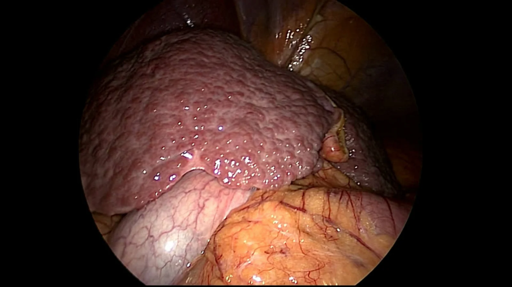
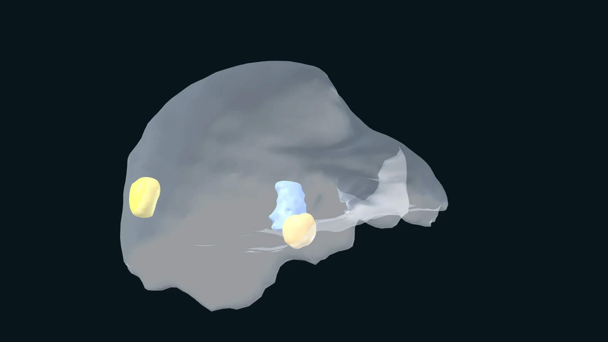
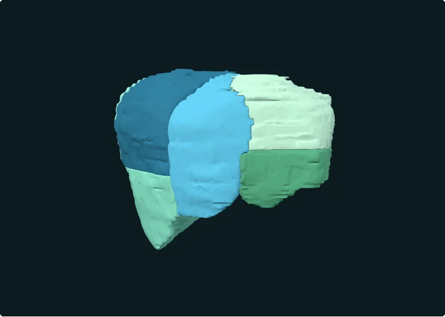

Extract the 3D model
Building a patient-specific model from pre-operative MRI and CT: the eight liver segments, together with the vessel map, the tumour and the other structures the surgeon needs to see.
HARLI · Surgical computer vision
HARLI is developing a real-time augmented reality system that automatically overlays liver segments, functional structures, blood vessels and optimal resection margins from pre-operative scans onto the laparoscopic scene — so surgeons can see the anatomy they currently have to memorise.

Prepared AR overlayOriginal imageThe HARLI projectReal-time high-fidelity augmented reality in laparoscopic liver resection
Built togetherSurgeons, patients & industry
Discover the challengeLong-term damage to the liver — cirrhosis and liver cancer — is treated by surgically removing part of the organ, or by transplant. Laparoscopic and robotic liver resections are pivotal in modern surgery: they are minimally invasive, they take out the unhealthy tissue while preserving liver function, and patients heal faster.
They are also technically demanding. Surgeons lose tactile feedback, the liver is opaque, and the interpretable pre-operative 3D MRI and CT scans that define the plan are not readily accessible during the operation itself. So the surgeon has to memorise the complex structure of the liver and its abnormalities, and re-interpret it continuously against a live camera view. That makes the procedure longer and harder than it needs to be.
Augmented reality should close that gap. Existing algorithms have not yet delivered it, for two specific reasons: they do not run in real time, and they are not robust enough for the conditions of an operating theatre.
of annual deaths in England are caused by liver disease and liver cancer together.
projected rise in liver cancer in the UK between 2025 and 2040.
Keyhole and robotic instruments remove the sense of touch surgeons use to locate lesions and judge tissue.
The segments, vessels and tumours that determine the resection are invisible beneath the liver surface.
Pre-operative 3D imaging is hard to access and interpret mid-procedure, so the plan has to be held in memory.
HARLI uses an advanced data-driven method to carry a patient's anatomy from pre-operative imaging through to a live overlay on the laparoscopic view. The stages run in order and each depends on the last: the model defines what is shown, ultrasound anchors it to the organ in theatre, mapping places it in the scene, and navigation keeps it there.
Building a patient-specific model from pre-operative MRI and CT: the eight liver segments, together with the vessel map, the tumour and the other structures the surgeon needs to see.
Automatically identifying major liver landmarks in ultrasound acquired during the operation — the link between the pre-operative plan and the organ as it actually is on the table.
Aligning the pre-operative anatomy and key landmarks with the intraoperative view, then overlaying segments, functional structures, vessels and optimal resection margins onto the liver during surgery.
A combined vision- and sensor-based system design that keeps the overlay dynamically aligned as the scene changes, targeting the real-time performance and robustness that existing algorithms lack.
In the Couinaud classification, each segment has its own inflow, outflow and biliary drainage, which is what makes it possible to remove one and leave the rest working. Resections are planned along these boundaries — but the boundaries are invisible on the surface of the organ.
That is the standard an overlay has to meet. It is not enough to point roughly at the right lobe; the surgeon needs to know which side of a segmental boundary the instrument tip is on, and how much margin is left around the lesion.

Prepared liver anatomy.
Rotate the liver and reveal the relationship between its surface and internal structures.
Focus the model, then use arrow keys to rotate, + / − to zoom, and R to reset. Tab moves to the next control. Page scrolling stays available outside touch rotation.

Loading the eight liver segments…
Reconstructed from CT-derived segment annotations shared by Xukun Zhang et al., using 3D-IRCADb case 01.
All eight segments
Select a segment to isolate it in the model.
Segment I lies posteriorly — rotate to see it.
Segment IV is combined in this dataset.
Better visualisation is not the end goal. Making the anatomy visible during the operation is intended to enable faster, optimal, functional organ-preserving liver surgery — and through that, improved patient safety and recovery.
The project has been co-designed from the outset with surgeons, patients and industry, so that it addresses unmet clinical needs as clinicians describe them rather than as they appear from a distance.
liver-related records
through August 2026
J. Feng, X. Zhang, S. Farid & S. Ali
arXiv:2607.17810· Accepted at MICCAI 2026J. Feng, X. Zhang, S. Farid & S. Ali
International Journal of Computer Assisted Radiology and Surgery · 21(5)X. Zhang, S. Ali, Y. Kang, J. Zhu, M. Han, L. Wang, X. Wang & L. Zhang
International Journal of Computer Assisted Radiology and Surgery · 21(1)X. Zhang, J. Feng, P. Liu, M. Han, Y. Kang, J. Zhu, L. Wang, X. Wang, S. Ali & L. Zhang
Medical Image Analysis · 107(B):103825M. R. Kowal, T. Williams, A. Dosis, S. Pathak, S. Farid, D. Stocken, P. Lodge, S. Ali, D. Tolan & D. Jayne
Surgical Innovation · online ahead of printW. Tang, T. Chen, Y. Espinel, S. Farid, E. Buc, A. Bartoli & S. Ali
Healthcare Technology Letters · 12(1):e70032T. Chen, J. Borgars, A. N. M. Shahir, S. Farid & S. Ali
MIUA 2025 · conference abstract · not peer reviewedJ. Borgars, J. Raja, A. Ramakrishnan, A. K. Abbas, A. Gallagher, A. N. M. Shahir, T. Vraimakis & S. Ali
MIUA 2025 · LNCS 15918· pp. 204–218A. K. Abbas, A. Gallagher, T. Vraimakis, J. Borgars, A. N. M. Shahir, J. Raja, A. Ramakrishnan & S. Ali
MIUA 2025 · LNCS 15917 · pp. 216–229X. Zhang, S. Ali, M. Han, Y. Kang, X. Wang & L. Zhang
International Journal of Computer Assisted Radiology and Surgery · 20(7)S. Ali, Y. Espinel, Y. Jin et al.
Medical Image Analysis · 99:103371X. Zhang, S. Ali, T. Liu, X. Zhao, Z. Cui, M. Han, S. Ma, J. Zhu, Y. Kang, L. Wang, X. Wang & L. Zhang
Computers in Biology and Medicine · 182:109202 · extended journal versionX. Zhang, Y. Liu, S. Ali, X. Zhao, M. Sun, M. Han, T. Liu, P. Zhai, Z. Cui, P. Zhang, X. Wang & L. Zhang
MICCAI 2023 · LNCS 14222 · conference precursor
Associate Professor and founder of the AI in Medicine and Surgery group at the University of Leeds, working across medical imaging, computational surgery, 3D reconstruction, segmentation and fusion.
Leeds profileHPB and transplant surgeon, St James’s University Hospital.
Computational scientist, Tracking and Registration, University of Leeds.
Masters student and in-coming PhD student at AIMS group, University of Leeds.
Clinical collaboration connecting research with liver surgery practice.
Industry partner for experimental collaborations.
Engineering and Physical Sciences Research Council.
We're interested in hearing from clinical collaborators, groups working on registration and deformable modelling, and prospective research students. The official project record is held by the Faculty of Engineering and Physical Sciences at Leeds.
View the Leeds project record